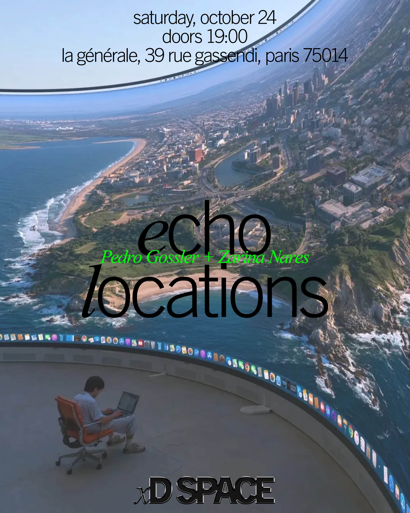

Echo Locations

xD SPACE presents Echo Locations, a plunge head-first into the fanatical tendencies of this century’s fractal, atomized media landscape. Join us as we navigate a world violently freed from the responsibility of mass consensus and investigate the frenzied centers around which individuals gather without ever forming a crowd—finding their way by remnants of their own actions bounced back at them off the internet’s infinite walls. Why can’t we stop thinking about ourselves? Why do we copy everything we see? Why do we never stop listening? Why is politics increasingly a literal meme? Why are we so drawn to the highly questionable?
Guiding us through this world are the illuminating video works of artists @zarinaaaaaaaaaaaaaaaaaaaaaa and @pedrogossler—richly overlapping obsession and fandom, introspection and power. Both bring a sincere curiosity to the beautiful strangeness embedded in the everyday and a critical approach to the meaning of the archive today.
Echo Locations is composed of the following works:
- REAL FEELINGS by Zarina Nares (40:14)
- I'm A Slave 4 U - Britney Spears (Lyrics and Acapella) by Zarina Nares (3:51)
- Work Bitch - Britney Spears (Lyrics) by Zarina Nares (6:05)
- Piece Of Me - Britney Spears (SLOWED) [OFFICIAL FAN-MADE MUSIC VIDEO] by Zarina Nares (4:14)
- That summer when Criss Angel levitated on cable tv left a deep impression on me by Pedro Gossler (12:43)
- MMA by Pedro Gossler (0:40)
- Fanfictional Politics by Pedro Gossler (30:27)
98 minutes. No subtitles.
Zarina Nares is a New York City-born artist, the daughter of Indian and British parents, raised in the Sufi Muslim tradition. Her interdisciplinary practice searches for the sites where emotional, political, and aesthetic forces collapse into one another.
Pedro Gossler is an interdisciplinary artist based in Rotterdam, NL whose practice spans photography, video, and animation. His work investigates memory and the archive, examining how digital cultures reshape the ways histories are recorded, transmitted, and reconstructed.
This space will take place in English.